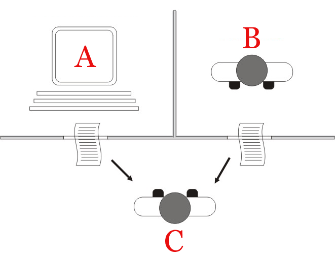

Introduction
AI - 2021 H2
Created: 2021-08-25 Wed 10:33
Introduction
Motivation
A bit of history
Over time, humans have proven to be lazy and smart
- We've built tools to help with do our work
- Spears, Knifes, Hammers
- And built new tools with those tools
- We've used animals to do our work
- Plow horses
- We've built machines to do our work
- Tractors
- We've built computers to aid our brains
We want even better machines!
Machines so far have solved a vast amount of physical problems.
- Transportation
- Heating / Cooling
- Energy distribution
- And the list goes on…
Yet that seems insufficient, humans are still working.
- Our machines are too dumb, so far they can only support our work.
A whole new class of machines
- Can machines be intelligent?
- At which point should we call them intelligent?
- What's Intelligence on the first place?
- How to build intelligent systems?
A practical approach
I propose to consider the question, ‘Can machines think?’
– Alan Turing, 1950.
The Imitation Game

An example conversation
- Q: Please write me a sonnet on the subject of the Forth Bridge.
- A: Count me out on this one. I never could write poetry.
- Q: Add 34957 to 70764
- A: (Pause about 30 seconds and then give as answer) 105621. (Sum)
- Q: Do you play chess?
- A: Yes.
- Q: I have K at my K1 (e1|e8), and no other pieces. You have only K at K6 (e3|e6) and R at R1 (a/h 1/8). It is your move. What do you play?
- (BoardA, BoardB, …)
- A: (After a pause of 15 seconds) R-R8 (a1/h1) mate.
Dissecting Intelligence
The Turing test appears to be insufficient.
- Different modes of thinking
- Context awareness
Modes of thinking
- "Fast" thinking. System 1
- Automated, immediate thinking/reasoning
- "Slow" thinking. System 2
- Manual, active thinking/reasoning
Context Awareness
- Language Ambiguities
- Winograd schema challenge
- An ambiguity resolution problem.
- The computer does not fit in the bag because it's too big.
- What's too big?
- The computer does not fit in the bag because it's too small.
- What's too small?
- The computer does not fit in the bag because it's too big.
- An ambiguity resolution problem.
- Winograd schema challenge
- Perception ambiguities are also resolved by context
AI in practice
Intelligent systems
The goal is to be able to build intelligent systems.
Building those requires solving tasks that demonstrate intelligent behaviour and on top of that, systems that humans can interact with.
We will be focusing on core tasks needed to build such systems
Tasks to be solved
- Dealing with human input
- Computer Vision
- Computer Audition
- Understanding
- Natural Language Processing
- Knowledge Representation & Automated Reasoning
- Machine Learning
- Acting
- Robotics
- (Producing output for humans)
Problems to be solved
- How to use AI?
- Goals
- Ethics
Course Overview
Part 1: Deductive AI
- Search and Planning
- Solving problems through Path-finding.
- Games
- Logic
- Constraint-satisfaction solvers
Part 2: Inductive AI
- Evaluating performance
- ML Tasks
- Learning algorithms and techniques
- Support-vector machines
- Decision Trees
- Naïve Bayes
- Markov Decision Processes
- Neural Networks